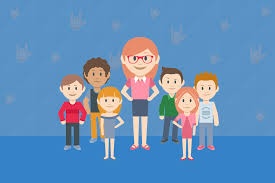

No início de minha carreira fui professora de alunos do Fundamental I. Passei num concurso e fui bancária por doze anos.
Certa altura da minha vida resolvi voltar para a Educação. E qual surpresa o futuro me reservava? Perto de minha aposentadoria acontece a Reforma Previdenciária a qual modifica os tempos de aposentadoria.
Hoje abracei além da Matemática, componente curricular de formação, mais dois componentes curriculares: a Robótica e o Pensamento Computacional, os quais me deram mais ânimo para continuar minha jornada.